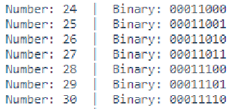

Introduction
In today’s activity we will study how computers “count”, and we will discuss the idea of binary numbers and binary counting.
We will then connect the Arduino board to 4 LEDs, and see how the computer can count.
The primary tool for this project will be TinkerCad -> https://www.tinkercad.com Create your own account to access TinkerCad and remember your login details, as we will be using TinkerCad often throughout this module.
Binary Counting
Computers count in BINARY, i.e., using ones and zeros. For example, the number 5 in binary is 00000101. How does this work?
Below is a table that shows the possible combinations of 4-bit binary numbers and their decimal equivalent of 0 to 255:
*Bite binary represented here is MSB to LSB |
Converting between Decimal <---> Binary
Since binary is a base-2 system, each digit represents an increasing power of 2, with the rightmost digit representing 20, the next representing 21, then 22, and so on. To determine the decimal representation of a binary number simply take the sum of the products of the binary digits and the powers of 2 which they represent.
Below are some examples as reminders.
The decimal number `10' is converted to binary form like so:
\[ \begin{matrix} 2^3 & 2^2 & 2^1 & 2^0\\ \hline 8 & 4 & 2 & 1 \\ 1 & 0 & 1 & 0 \end{matrix} \]
Alternatively you can achieve the same result this way too:
\[ [(1) \cdot 2^{3}] + [(0) \cdot 2^{2}] + [(1) \cdot 2^{1}] + [(0) \cdot 2^{0}] \ \]
\[ 1 \cdot 8 + 0 \cdot 4 + 1 \cdot 2 + 0 \cdot 1 \]
\[ 1 0 1 0 \]
Therefore, decimal `10' is 1010 in binary form.
The binary number 11011011 is converted to decimal form like so:
\[ \begin{matrix} 2^7 & 2^6 & 2^5 & 2^4 & 2^3 & 2^2 & 2^1 & 2^0\\ \hline 128 & 64 & 32 & 16 & 8 & 4 & 2 & 1 \\ 1 & 1 & 0 & 1 & 1 & 0 & 1 & 1 \\ \end{matrix}\\ 219 = 128+64+16+8+2+1 \]
Alternatively, you can achieve the same result this way too:
\[ [(1) \cdot 2^{7}] + [(1) \cdot 2^{6}] + [(0) \cdot 2^{5}] + [(1) \cdot 2^{4}] + [(1) \cdot 2^{3}] + [(0) \cdot 2^{2}] + [(1) \cdot 2^{1}] + [(1) \cdot 2^{0}] \]
\[ [1 \cdot 128] +[1 \cdot 64] + [0 \cdot 32] + [1 \cdot 16] + [1 \cdot 8] +[0 \cdot 4] + [1 \cdot 2] + [1 \cdot 1] \]
\[ 219 = 128+64+16+8+2+1\]
Settting up the Circuit
Login to TinkerCad and then click on Circuits > Create new Circuit.
Change the circuit name, located top-left hand side of the screen to 8-bit Binary Counter, see below:

You will need to add an Arduino Uno and a breadboard. From there you need to connect the two boards from the 5V and GND pins of the Arduino to the power and ground rails of the breadboard.
To do this, select the Arduino Uno and the breadboard from Components > Basic components, or by changing Components > Basic to Components > Starter and choosing Arduino Uno and the Breadboard starter. Please refer to the image below:

If you have chosen the Arduino and breadboard template from the the Components > Starter, then these two components are already connected with a corresponding red 5V line and GND line. Otherwise, you will need to connect the two boards in the configuration mentioned above.
Next, you will need:
- 8 x LED, any colour
- 8 x resistor, set at \(0.22k\Omega\) or \(220\Omega\)
Placing components (refer to image below step by step instructions):
- Place the LEDs so that the cathode and anode are in row 6 and 7 respectively, and both are in column e. Repeat for the next 7 LEDs with rows 8, 11, 14, 17, 20, 23, 26 as gaps between each LED.
- Place the resistors inline with the Cathode of their corresponding LED so that terminal 2 is in column b and terminal 1 in the GND rail.
- Connect a wire from inline with each Anode of LED, and connect from left to right of the breadboard, to Pins 12, 11, 10, 9, 8, 7, 6, 5 in the Arduino Uno.

Programming the Circuit
Once you have completed the circuit you will need to programme the Arduino Uno. Located above the Components, click the option Code > Text. Once the sketch has appeared reproduce the following code:
void setup()
{
}
void loop()
{
}
Now you are ready to set up all the Sketch up as follows.
int ledPin[8]={5,6,7,8,9,10,11,12};
char binary[9] ={0,0,0,0,0,0,0,0,'\0'};
void setup()
{
}
void loop()
{
}
Line 2, is an array of char with a length of 9. Notice that at the end the array there is \0. This is a null terminator, so that the when printed to the Serial monitor it only prints the positions prior to the \0 (in this case, the first 8 positions) in the array.
When setting up the void setup() we will do something a little more efficient to set the pinMode() of the ledPins array.
Important note: arrays start from 0 to n. So ledPins[1] = 6 and ledPins[7] = 12.
\[ \begin{matrix} Index[x] & 0 & 1 & 2 & 3 & 4 & 5 & 6 & 7\\ \hline LedPin Value & 5 & 6 & 7 & 8 & 9 & 10 & 11 & 12 \\ \end{matrix} \]
Line 10 shows the initialisation of a for loop ,for(int x=0;x<8;x++), whereby it sets a variable x as 0 and while x less than 8 increments x by 1. Therefore, we can repeat the code between the {} 8 times.
So you can see that as x starts at 0, ledPin[x] will set pin 5 as OUTPUT. So therefore Serial.print(ledPin[x]) outputs the value to the Serial monitor.
void setup()
{
Serial.begin(9600);
for(int x=0;x<8;x++)
{
pinMode(ledPin[x], OUTPUT);
Serial.print(ledPin[x]);
Serial.print(",");
}
Serial.println();
}
The void loop() function has little code because of the for loop and a user-defined function named displayBinary();.
void loop()
{
for (byte counter =0;counter<=255; counter++)
{
displayBinary(counter);
delay(500);
}
}
QUESTION:
- Looking at lines 22 to 26, describe what is happening.
So now lets look at the user-defined function displayBinary(); below.
*Do you recall how in earlier weeks of the course you looked at the number of bits in different data types? Notice that the expected argument in the displayBinary(byte numToShow); is the data type byte. So line 31, for(int i=0; i<8; i++) iterates over the number bits in one byte.
displayBinary(counter);
delay(500);
}
}
void displayBinary(byte numToShow)
{
for (int i =0;i<8;i++)
{
if (bitRead(numToShow, i)==1)
{
binary[7-i] = '1';
digitalWrite(ledPin[i], HIGH);
}
else
{
binary[7-i] = '0';
digitalWrite(ledPin[i], LOW);
}
}
Serial.print("Number: ");
Serial.print(numToShow);
Serial.print(" | Binary: ");
Serial.println(String(binary));
}
Line 33, if (bitRead(numToShow, i)==1) passes the numToShow variable to the inbuilt function bitRead();. The if statement checks to see if the bit i is a 1.
Line 35, binary[7-i] = '1'; sets the value at the index 7-i.
Line 36, digitalWrite(ledPin[i], HIGH); sets the LED at the correct bit position of HIGH.
Therefore in line 38 the else condition is implicitly true when (bitRead(numToShow, i)==0).
Line 40, binary[7-i] = '0'; sets the value at the index 7-i.
Line 41, digitalWrite(ledPin[i], LOW), sets the LED at the correct bit position to LOW.
Line 44 to 47, outputs the current number numToShow and binary equivalent to the Serial monitor. As seen in image below.

Below shows the output you'd expect to see for the decimal number 171.
\bigcirc
\[ \begin{matrix} Arduino pins & 12 & 11 & 10 & 9 & 8 & 7 & 6 & 5\\ LEDs &\circledast & \bigcirc & \circledast & \bigcirc & \circledast & \bigcirc & \circledast & \bigcirc \\ Binary &1 & 0 & 1 & 0 & 1 & 0 & 1 & 0 \\ \end{matrix} \]
QUESTIONS:
Look at the following documentation for
bitRead()and summarize, in your own words, what it does: https://www.arduino.cc/reference/en/language/functions/bits-and-bytes/bitread/Edit line 2 so that it says
char binary[8] ={0,0,0,0,0,0,0,0};and then start the simulation. What difference was there from the original output? Once tested return the code on line 2 tochar binary[9] = {0,0,0,0,0,0,0,0,'\0'};.What would the output be on line 47
Serial.println(String(binary)), if the code onlines 35 and 40binary[7-i]is changed tobinary[i]. Test your theory/answer.
Extension
- Append the circuit to show 9-bits.
- Adjust the code to match the circuit:
- Increase the arrays length by one on lines 1 and 2
- As such, line 8,
for(int x=0;x<8;x++),x<8needs to be increase by one to match the changes made on lines 1 and 2. - Line 21,
for (byte counter =0;counter<=255; counter++)needs to updated to show a range from 0 to a 9-bit number. Use the formula \((2^9 - 1)\) to find the value you need. - Adjust line 30
for (int i =0;i<8;i++)so that it is the same as line 8. - Finally, modify lines 34 and 39
binary[7-i] =,8-i.
QUESTIONS:
Does the cicuit and code output a 9-bit number?
Reflect on this project, and focus on the difficulty of the circuit and code.